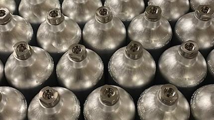
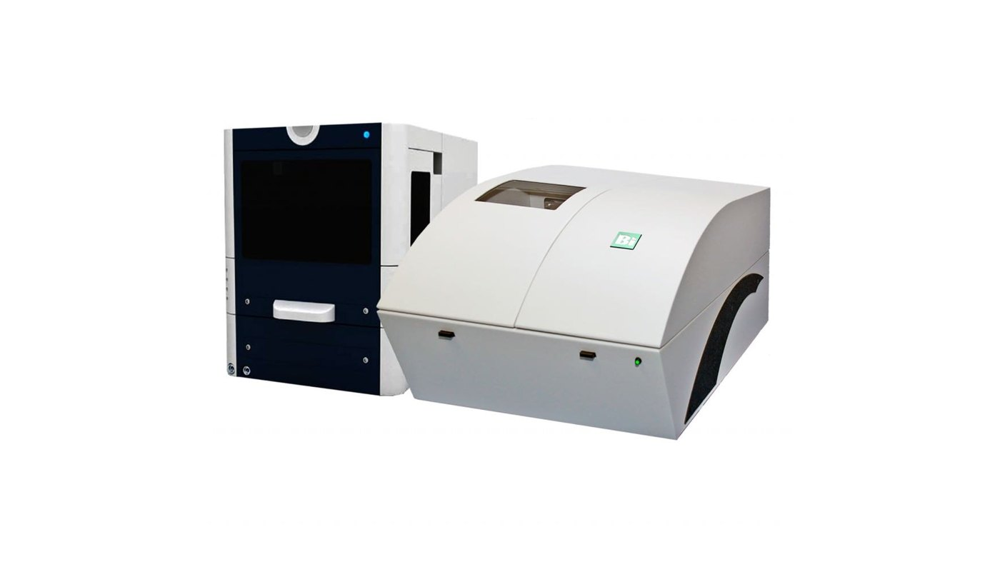
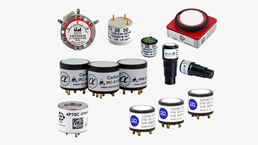

Jakość robi różnicę
Specjalizujemy się w dystrybucji aparatury oraz wyposażenia z zakresu bezpieczeństwa gazowego.
Skontaktuj się z namiProdukty
W naszej ofercie znajdą Państwo gazy wzorcowe, kalibratory gazów, sensory oraz wiele innych urządzeń.

Gazy kalibracyjne
Mieszaniny na zamówienie · regulatory przepływu
Spantech dostarcza wysokiej jakości gazy kalibracyjne na całym świecie, specjalizując się w dostosowanych mieszaninach i premium regulatory do precyzyjnego dozowania.

Generatory gazu kalibracyjnego
ACD · Gazcal
Przenośne, na żądanie rozwiązania kalibracji gazu.

Aparatura naukowo-badawcza
Biosensing Instrument · analizatory SPR
Zaawansowana aparatura naukowa typu analizatory SPR do zastosowań w przemyśle i w badaniach naukowych.

Czujniki gazowe
Elektrochemiczne · IR · pellistory
Nasza kompleksowa oferta czujników gazowych jest dostępna do zakupu online.

Rzadkie oczyszczacze i osuszacze gazów
Sircal · MP-2000 · PD-2012
Kompaktowe systemy zaprojektowane do dostarczania oczyszczonego gazu bezpośrednio do punktu użycia.
Spantech Products Ltd
Firma macierzysta · Wielka Brytania, od 1977
Założona w 1977 roku i do dziś rodzinna firma Spantech dostarcza specjalistyczne rozwiązania w zakresie gazów kalibracyjnych na cały świat — z siedziby głównej w Wielkiej Brytanii, z biurami partnerskimi w Polsce, Indiach i USA.
Nasi klienci
Nasi klienci obejmują różne branże, w tym ochronę środowiska, metalurgię, górnictwo, chemię, motoryzację, przemysł spożywczy, medycynę i naukę.
Dostosowanie rozwiązań do indywidualnych potrzeb klientów w Polsce, Estonii, Łotwie i Litwie.
Kładziemy szczególny nacisk na zrozumienie specyficznych potrzeb naszych klientów w każdym z tych regionów, starając się dostarczać rozwiązania, które najlepiej odpowiadają ich wymaganiom.
Dowiedz się więcejSpantech Products Ltd
Założona w 1977 roku i do dziś rodzinna firma Spantech dostarcza specjalistyczne rozwiązania w zakresie gazów kalibracyjnych na cały świat — z siedziby głównej w Wielkiej Brytanii, z biurami partnerskimi w Polsce, Indiach i USA.
spantech.co.ukZłóż dzisiaj zapytanie ofertowe
Skontaktuj się z nami, aby uzyskać niezobowiązującą wycenę.
Skontaktuj się z nami